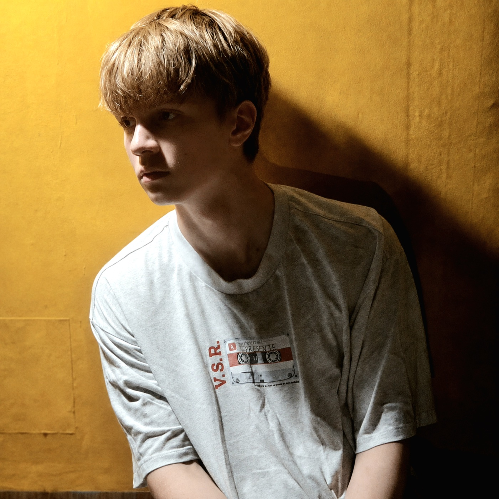

Observe
Collect the room’s colour, silence and visual tension before writing a note.
Creative progress · Yellow Room
A studio journal about turning one colour, one quiet space and a passing mood into music.
Follow the processThe starting point
The yellow room was more than a background. Its warm light, empty corners and long shadows became the emotional reference for the track: intimate, slightly uneasy and cinematic. Instead of beginning with a genre, the work began with a place.
Making the track
Collect the room’s colour, silence and visual tension before writing a note.
Find the central musical idea and let it stay imperfect long enough to reveal its character.
Shape the arrangement, performance and textures around the original emotional centre.
Finish the mix, choose the portrait and allow the private moment to become public.

The finished track
“The room becomes empty again.” Written, performed and produced by Romanich. The final release carries the same warm light and quiet tension that started the process.
Ongoing journal
This page will continue to collect notes, images and decisions from future tracks—showing not only what was released, but how an idea became real.
Return to the main site